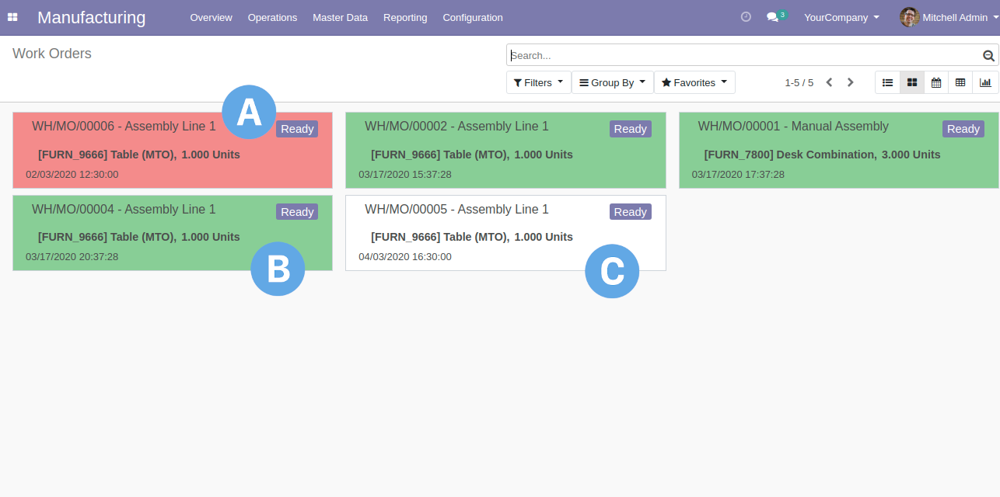

<!-----------------------------------------------------------------
INSTRUCTIONS TO USE THIS DESCRIPTION FILE TEMPLATE:

Component description is divided into 3 sections, each section's colors 
following the SprintIT brand instructions. These sections (1,2 and 3) 
and the structure should be maintained in every component description 
file derived from this file.

section 1 background colors: title #435060, subtitle RGBA(67,80,96,0.75), text areas RGBA(67,80,96,0.25)
section 2 background colors: title #AC9263, subtitle RGBA(172,147,110,0.50), text areas RGBA(172,147,110,0.25)
section 3 background colors: title #62A8E5, subtitle RGBA(98,168,229,0.50), text areas RGBA(98,168,229,0.25)

The 4. section is the general info about the company. This should not be 
touched.

The data sections that may be and are to be altered for each component 
are marked with -- COMPONENT DATA STARTS -- and -- COMPONENT DATA ENDS -- 
tags.

To maintain the index.html short and readable, the following responsive structure should be used with videos and pictures

         <div class="container-fluid">
            <div class="row">
               <div class="col-md">
                  < vid/img here >
               </div>
               <div class="col-md">
                  < vid/img here >
               </div>
            </div>
         </div>

..and with images: 


------------------------------------------------------------------->


<div class="document">

<div class="container-fluid" style="margin:0% 0% 0% 0%;padding:0px 0px 0px 0px;">

   
   

   <!------------------------------------------------------------------->
   <!---- 1. MAIN DESCRIPTION SECTION ---------------------------------->
   <!------------------------------------------------------------------->
	<div class="container-fluid" style="background-color:#435060;width:100%;padding:2% 2.5% 2% 2.5%;margin:0px 0px 0px 0px;">
		<p style="color:#ffffff; font-family: 'Arial';font-size: 2.5em;padding:0px 0px 0px 0px;margin:0px 0px 0px 0px;">
         SprintIT Work Order Sorting
      </p>
	</div>
	<div class="container-fluid" style="background-color:RGBA(67,80,96,0.25);padding:2% 2% 2% 2%;margin:0px 0px 0px 0px;">
		<p class="container-fluid" style="font-family: 'Arial';font-size: 1.5em;margin:0px 0px 0px 0px;">
         This module provides a nice enhancement to Work Order listing by highlighting the deadlines of the
         Work Orders with different colors.
         
		</p>
	</div>


   <div id="toc"></div>
	<div class="container-fluid" style="background-color:RGBA(67,80,96,0.75);padding:2% 2.5% 2% 2.5%;margin:0px 0px 0px 0px;">
      <p style="font-family: 'Arial';color:#ffffff;font-size: 2.5em;margin:0px 0px 0px 0px;padding:0px 0px 0px 0px;">
         Table of contents
      </p>
	</div>
   <div class="container-fluid" id="moreinfo" style="background-color:RGBA(67,80,96,0.25);padding:2% 2% 2% 2%;margin:0px 0px 0px 0px;">
      <p class="container-fluid" style="font-family: 'Arial';font-size: 1.5em;margin:0px 0px 0px 0px;">
         <!-- COMPONENT DATA STARTS -->
            <a class="nodec" style=color:#ffffff;" href="#toc1">APPLICATION HIGHLIGHTS</a><br>
            <a class="nodec" style=color:#ffffff;" href="#toc2">FUNCTIONALITY</a><br>
         <!-- COMPONENT DATA ENDS -->
      </p>
   </div>

   <div class="container-fluid" style="height:25px;">&nbsp;</div>

   <!------------------------------------------------------------------->
   <!---- 2. HIGHLIGHTS SECTION ---------------------------------------->
   <!------------------------------------------------------------------->
	<div class="container-fluid" id="toc1" style="background-color:#AC9263;width:100%;padding:2% 2.5% 2% 2.5%;margin:0px 0px 0px 0px;">
		<p style="color:#ffffff; font-family: 'Arial';font-size: 2.5em;padding:0px 0px 0px 0px;margin:0px 0px 0px 0px;">
         APPLICATION HIGHLIGHTS <a class="nodec" style=color:#ffffff;" href="#toc">[back]</a>
      </p>
	</div>

	<div class="container-fluid" style="background-color:RGBA(172,147,110,0.25);width:100%;padding:2% 2.5% 2% 2.5%;margin:0px 0px 0px 0px;">
		<p class="container-fluid" style="font-family: 'Arial';font-size: 1.5em;margin:0px 0px 0px 0px;">
			<!-- COMPONENT DATA STARTS -->
         Get a clear view on Work Orders and their deadlines with just one look: which Work Orders belong to the past,
         which are acute this week and which are to be done later in the future.
			<!-- COMPONENT DATA ENDS -->
		</p>
	</div>

   <div style="clear:both;"></div>
   <div class="container-fluid" style="height:25px;">&nbsp;</div>

   <!------------------------------------------------------------------->
   <!---- 3. FUNCTIONALITY SECTION ------------------------------------->
   <!------------------------------------------------------------------->
	<div id="toc2" class="container-fluid" style="background-color:#62A8E5;width:100%;padding:2% 2.5% 2% 2.5%;margin:0px 0px 0px 0px;">
		<p style="color:#ffffff; font-family: 'Arial';font-size: 2.5em;padding:0px 0px 0px 0px;margin:0px 0px 0px 0px;">
         FUNCTIONALITY <a class="nodec" style=color:#ffffff;" href="#toc">[back]</a>
      </p>
	</div>
	<div class="container-fluid" style="background-color:RGBA(98,168,229,0.25);padding:2% 2% 2% 2%;margin:0px 0px 0px 0px;">
		<p class="container-fluid" style="font-family: 'Arial';font-size: 1.5em;margin:0px 0px 0px 0px;">

      Easily sort and highlight the MRP Work Orders by their deadlines.
      <br>
      
      MRP Production Work Order kanban view shows the :
         <ul style="font-family: 'Arial';font-size: 1.5em;">
            <li>(A) Red: Work Orders from last week or before that</li>
            <li>(B) Green: Current week's Work Orders</li>
            <li>(C) White: Future Work Orders</li>
         </ul>


      </p>
   </div>


   <div class="container-fluid" style="height:25px;">&nbsp;</div>

   <!------------------------------------------------------------------->
   <!--- common footer for all sprintit modules ------------------------>
   <!------------------------------------------------------------------->
   <div class="container-fluid">
     <div class="row">
       <div class="col-sm">
         
         <div style="clear:both;"></div>
         <p style="font-family: 'Arial';font-size: 1em;margin:0px 0px 0px 0px;">

SprintIT improves its customers' competitiveness and growth potential with Odoo.
We constantly develop new Odoo modules to help our customers run their business more smoothly and efficiently.
We regularly publish our new modules in the Odoo App Store.
SprintIT brings together agility, business understanding and a professional way of working. 
Our skilled developers can tailor Odoo to meet your needs.

            <br><br>
            <a href="https://www.sprintit.fi/in-english">Read more.</a>
         </p>
       </div>
       <div class="col-sm">
         
         <div style="clear:both;"></div>
         <p style="font-family: 'Arial';font-size: 1em;margin:0px 0px 0px 0px;">
            We are the first Odoo Gold partner in Finland. We are renowned for our professional developers and we 
            want to tailor the ERP solution for you.
         </p>
       </div>
     </div>
   </div>

	<div style="clear:both;"></div>
</div>

</div>


